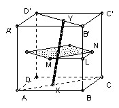
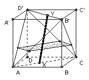

The cube ABCDA'B'C'D' has A above A', B above B' and so on. X is any point of the face diagonal AC and Y is any point of B'D'.
(a) find the locus of the midpoint of XY;
(b) find the locus of the point Z which lies one-third of the way along XY, so that ZY=2·XZ.
Solution

The key idea is that the midpoint must lie in the plane half-way between ABCD and A'B'C'D'. Similarly, Z must lie in the plane one-third of the way from ABCD to A'B'C'D'.
(a) Regard ABCD as horizontal. Then the locus is the square with vertices the midpoints of the vertical faces (shown shaded in the diagram).
Take Y at B' and let X vary, then we trace out MN. Similarly, we can get the other sides. Now with Y at B', take X in general position, so the midpoint of XY is on MN. Now move Y to D', the midpoint traces out a line parallel to the other two sides of the square, so we can get any point inside the square. But equally, it is clear that any point inside the triangle LMN corresponds to a point Y on the ray D'B' not between B' and D', so it does not lie in the locus. Similarly for the other three triangles. So the locus is the square.
(b) A similar argument shows that the locus is the rectangle shown in the diagram below which is √2/3 x 2√2/3.


Solutions are also available in: Samuel L Greitzer, International Mathematical Olympiads 1959-1977, MAA 1978, and in István Reiman, International Mathematical Olympiad 1959-1999, ISBN 189-8855-48-X.
2nd IMO 1960
© John Scholes
jscholes@kalva.demon.co.uk
18 Sep 1998
Last corrected/updated 24 Sep 2003